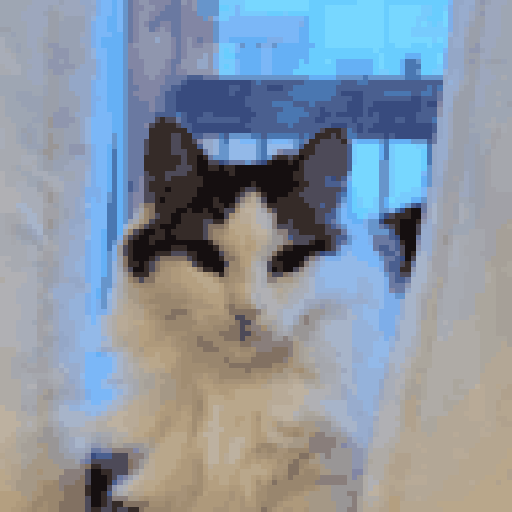
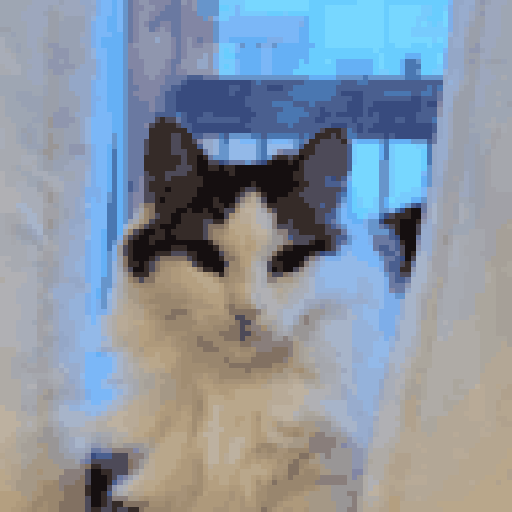

Main Floor
E: Interact
Speaker
Dialogue text goes here...
Tap / Space / Enter to continue
Marice & Cats
House Adventure
Find Alice, Olive, and Beatrice!
Feed the cats. Explore the house. Get snuggles.
Feed the cats. Explore the house. Get snuggles.
You found them all!
 


All three cats have been found, fed, and (mostly) forgiven you
for disturbing their hiding spots. Beatrice even offered a snuggle.
Marice's house is warm, cozy, and just a little bit chaotic —
exactly the way it should be.